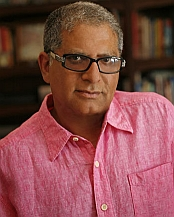
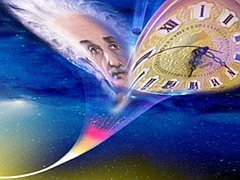

“La ciencia fomenta el abandono de la búsqueda de la verdad absoluta”
—Bertrand Russell

La magia no existe, por eso no vemos efectos de su trabajo. Ninguna religión ha eliminado el hambre, ni las terapias de la Nueva Era poseen grupos confirmados por investigadores independientes que ofrezcan evidencias positivas al respecto. No tengo una varita hechicera como Harry Potter y la invisibilidad es cosa de la nanotecnología. El mundo sigue igual aunque reces, medites, creas que te rigen las normas que mandan al electrón, percibas la mecánica cuántica como una religión o decidas que tu elección evitará que mueras. Si la medicina pudiera recetar cualquier droga sin que pase por laboriosos experimentos, todos estaríamos en grave peligro de muerte. A pesar de las leyes, a pesar de las exigencias que se usan para tratar enfermedades, las personas continúan buscando las terapias ‘mágicas’, necesitamos asimilar que a pesar de todo el rigor farmacéutico, el ser humano es el conejillo de indias por excelencia.
Por eso es imprescindible el método científico. Por eso los experimentos son obligatorios, por eso escuchas sobre control, ciego y doble ciego; por eso un estudio requiere de confirmación y al final del camino, requiere de evidencias fuertes que derriben cualquier efecto placebo…también solicita escepticismo; si no contamos con esas pruebas estamos perdidos. Aún así, muchos de los resultados científicos son imperfectos; pero es lo más efectivo que tenemos. Sin embargo, por mucho tiempo las religiones y las ramas espirituales distintas en el mundo se han dedicado a sanarnos. Los dioses se encargaban de nuestra salud, sus profetas les preguntaban en templos y lugares sagrados específicos, obtenían respuestas de los sueños del paciente, recurrían a terapias “mentales” que aseguraban que el hombre es capaz de curarse solo si conseguía unir su energía a la de los dioses o el universo. La única exigencia es creer, te cures o no.
Pero decenas y decenas de miles de años de intentos no han dado resultado. Nos quedamos con mitologías fantásticamente raquíticas: los cristianos tienen un profeta que incluye como un portentoso milagro multiplicar el vino en una boda, hay hasta profetas alienígenas, ropa interior sagrada, líderes religiosos arrogantemente violentos y gurúes que confunden la observación con la percepción. Pero evidencias, alguna prueba que demuestre que realmente los poderes sobrenaturales y paranormales han sanado el planeta; no, no tenemos nada de eso. Por supuesto, los culpables somos nosotros, con nuestro libre albedrío y esa insolencia que nos impide apreciar ‘que el universo gira a nuestro alrededor’ (sarcasmo encendido).
“Con el fin de adquirir riquezas, o cualquier cosa en el universo físico, debe existir intención, es decir, tomar la decisión de ir por ello, de perseguirlo. El universo se encarga de los detalles, organiza y dirige las oportunidades. Usted sólo tiene que estar atento a esas oportunidades”, afirma el doctor Deepak Chopra en su libro La creación de riqueza.
Aparentemente, el Universo es inteligente y esa inteligencia está dedicada a nosotros. El Cosmos trabaja para el ser humano, somos todos átomos y estamos reflejados en el vacío atómico, o, como objetivamente lo explicaría Phil Molé en la revista Skeptic, “cuando le pides algo a una estrella, tu deseo se hace realidad”.
Pero una estrella fugaz es un meteorito y un ser humano no es un electrón, aunque estemos hechos de átomos. Pretencioso asegurar que tenemos alma o espíritu sin presentar pruebas, ¿esta materia o no materia es subatómica también? Los físicos andan detrás del Higgs pero no existe una teoría sobre el alma ni fórmulas que expliquen el espíritu. Así es, son entidades que producen eventos extraordinarios como la inmortalidad, afectan nuestro pensamiento tanto sobre la vida como la muerte, pero no dejan rastro alguno sobre su existencia. ¿Debemos creer o esperar? Más bien, dedicarnos a otra cosa, diría yo.
Hay creyentes que no se llevan bien con los escépticos. Especialmente cuando su forma de vida se sostiene con el dinero que reciben por la venta de sus creencias, o si su personalidad necesita de verdades absolutas que le otorguen inmortalidad, justicia y magia. Cualquier relato o pregunta que pueda esclarecer lo aparentemente misterioso no es bien vista y muchos se enojan por ello. De hecho, Chopra es uno de ellos. En su autobiografía El retorno de Rishi, el gurú describe un incidente en que mostraba el arte de la levitación o ‘vuelo yoga’ para la televisión. Esto debería de ser un evento extraordinario, protagonista de todas las primeras planas y mejores horarios en la televisión. Nunca he visto a alguien levitando; hay millones de clases de yoga en el mundo y los resultados pueden ser grandiosos, como los contorsionistas, pero levitar no se ha descubierto en ninguna de ellas. En aquella ocasión, la congregación de Chopra decía que lo iba a demostrar y comenzaron a saltar como lindos conejitos. Cuando el psicólogo clínico Guillermo Polonski le dijo a Chopra que sus “voladores parecían más bien saltamontes”, el hombre perdió los estribos y le dijo: “Creo que es el colmo de la arrogancia educarse con cuatro o cinco años en la escuela de medicina y tres años de formación y luego discutir con una tradición que ha existido sin interrupción durante cinco mil años”.
En otras palabras, la tradición dicta que veas mariposas donde sólo hay saltamontes. Esa medicina holística, integral o alternativa que tanto defiende, esa medicina donde el universo es inteligente y, como dios, surgió para ayudarte, no depende de evidencias, está más allá del método científico, no necesita de confirmación por estudios independientes; lo único que necesita es proclamar su ancianidad, creer en las coincidencias y explotar modelos incompletos de la ciencia. Es todo cuestión de proteger una buena cosecha, como el buen vino o una indeleble vinagreta.
“Examinado crédulamente, el argumento de Chopra parece convincente. Tiene cierta semejanza, por ejemplo, con la afirmación budista de que la materia y el espacio vacío son lo mismo; esta afirmación se conjuga con el hecho de que los átomos, los componentes básicos de la materia, son en su mayoría espacio vacío. Sin embargo, los argumentos basados en la lógica superficial, no sólo son convincentes también son peligrosos, ya que pueden llevarnos a patrones erróneos de pensamiento”, escribe Molé.
El misticismo, por supuesto, ha evolucionado. Chopra ha refinado al Tao de la Física, dándole más presencia cuántica a sus tonterías. El bosquejo principal agrupa elementos como darnos un lugar central en el Universo, proveernos con sentido, rebosar al humano con significado y vendernos la idea de que estamos todos conectados.
Es muy lindo, la verdad, y realmente lo fuera si se vieran los resultados. La mayoría en el mundo cree en la magia, en alguna religión o fuerza paranormal; ¿ha surtido efecto en el estado del planeta? No. Puede que te haga sentir mejor, pero no hay una forma apropiada ni adecuada que demuestre que todo eso funciona y que existen fuerzas naturales distintas que rigen, velan y cuidan nuestra existencia.
Por supuesto, la cuántica continúa avanzando también y no se ha quedado estancada en la explicación única a través del modelo de Copenhague, que Chopra utiliza para su argumento sobre el observador. En sus libros, el doctor alternativo cuenta que como nuestros cuerpos están compuestos de átomos se encuentran a merced del que lo observa, así que tenemos la capacidad de cambiar nuestros cuerpos a través de actividades intelectuales de la voluntad.
“El mundo físico, incluyendo nuestros cuerpos, es una respuesta del observador. Creamos nuestros cuerpos a medida que creamos la experiencia de nuestro mundo”, nos dice.
Por supuesto, todos sabemos el dilema del observador en la cuántica. Se trata del enigmático principio de incertidumbre que nos impide medir una partícula sin afectar el resultado. Es posible conocer una cosa, más no la otra. Por mucho tiempo, Copenhague fue el modelo que rigió ese conocimiento específico de la cuántica pero ya existe otro. Tenemos el experimento del físico John Cramer que basó su modelo en la teoría de radiación electromagnética de Wheeler-Feynman y predice los resultados de los experimentos cuánticos tan bien como el “viejo” modelo lo hace. Lo más atractivo: el observador no tiene ningún papel especial en el resultado.
“Por supuesto, es aún una teoría, sin embargo, como idea nos indica nuevamente que el observador no tiene que ver con el mundo subatómico. Sólo medimos sin saber, con modelos limitados; eso no quiere decir que sean los únicos y que otros no nos puedan decir lo que es relevante de forma más objetiva”, agrega Molé.
Los humanos seguimos afianzándonos a todo lo que nos ponga en el centro de las cosas. Los fenómenos que no pueden ser explicados nos excitan y hemos estado usándolos para justificar a nuestros dioses desde que descubrimos que podemos producir ilusiones para tapar nuestra ignorancia. Cada vez que algo es explicado, movemos nuestras pertenencias hacia el próximo misterio; y cuando ese enigma revela sus mecanismos nos pasamos a otro. No es la ausencia de evidencia lo que mortifica al creyente que propone afirmaciones extraordinarias como verdaderas, son las evidencias del otro, del científico en el laboratorio; él lo obliga a buscar otra casa y mudarse donde no haya iluminación.
“En la ciencia tenemos que definir nuestros términos con precisión semántica. Yo defino el ‘alma’, como el patrón único de información que representa la esencia de una persona. Según esta definición, a menos que haya algún medio para mantener el patrón de nuestra información personal después de que morimos, nuestra alma muere con nosotros. Nuestros cuerpos están hechos de proteínas, codificadas por el ADN, por lo que con la desintegración, nuestros patrones de proteínas de ADN se pierden para siempre. Nuestros recuerdos y la personalidad se almacenan en los patrones de neuronas en el cerebro, así que cuando las neuronas mueren se explica la muerte de nuestros recuerdos y personalidad, de forma similar a los estragos del accidente cerebrovascular y la enfermedad de Alzheimer, pero final”, escribió el psicólogo escéptico y autor Michael Shermer en uno de los debates que sostuvo con el doctor Chopra.
La ciencia es el mejor y más efectivo instrumento que tenemos para medir la realidad. Sus teorías, decía Isaac Asimov, están “más incompletas que equivocadas”. Pero si vendes falsedades como verdad, es posible que un escéptico meta sus narices y lo exponga.
“Si tienes pensamientos felices harás moléculas felices”. Es uno de los consejos de Chopra. La biología sería entonces un cuento para niños menores de tres años si las cosas fueran tan insensatamente simples.
No es lo mismo observar que percibir
Vampiros de lo desconocido
La prevención no es cura; es prevención. Deepak Chopra y muchos otros manejan temas mucho más prácticos que sí pueden ser validados por terapias y remedios naturales. El estrés, por ejemplo, es uno de ellos. Las personas pagan para aprender diversos formatos de relajación y la mayoría funciona. Vivimos en un mundo rápido, violento y contaminado, conocer cómo mantenernos saludables es efectivo, no importa la vía que elijas; existe un sinnúmero de sustancias naturales que se utilizan efectivamente para alivios varios. Sin embargo, hay una línea que no debe ser cruzada, porque entonces ya no es prevención, es simple fraude. Desafortunadamente, esos ungidos alternativos no curan el cáncer ni el Parkinson ni la diabetes.

Sin embargo, la inquebrantable ausencia de efectos y pruebas no resulta suficiente para convencer a las personas. Vas donde una bruja, te da un número de lotería y pierdes, compras un remedio para la enfermedad de tu hijo pero él igual muere; de alguna forma, el olvido se encarga de que no hagas una conexión fuerte con estos fallos, tu fe es más fuerte, lo justificas de algún modo. Vas donde otra bruja y te da un número donde te ganas algo, compras un remedio que te reduce el dolor que sentías; la coincidencia se fija en tu cerebro como si tu vida dependiera de ella. Te comunicas con tu marido muerto a través de un médium pero tu esposo, curiosamente, olvida todos los detalles más significativos sobre la vida de pareja que sostuvieron, detalles que él no desconocería en un momento tan importante. Pero eso no te importa, la idea de que él vino a ti a través de una desconocida a decirte que te ama es suficiente para calmar un poco tu dolor. ¿Dónde está la magia?, ¿dónde están los poderes paranormales y sobrenaturales de los que tanto hablan?, ¿no será todo personal?, ¿por qué no podemos estar seguros de ellos?
“Se estima que en los últimos 50,000 años alrededor de 107 mil millones de seres humanos han nacido. Es decir, que unas 100 mil millones de personas han muerto y ni uno de ellos ha regresado para confirmar, más allá de la duda razonable, que hay vida después de la muerte. Este conjunto de datos no augura nada bueno respecto a la promesa de la inmortalidad y las reclamaciones de una vida futura”, analiza Shemer.
Hemos tenido mucho tiempo para recolectar evidencias; evidencias fuertes. Sin embargo, todo lo que tenemos son anécdotas, efectos placebos, memorias falsas y las congregaciones del misterio, grupos que buscan el enigma pues es ahí donde consiguen justificar sus creencias, en lo desconocido.
En 1975, el físico Fritjof Capra tuvo una visión. Mientras miraba el mar, se dio cuenta de que una cantidad impresionante de ondas y partículas parecía fluir desde arriba y mezclarse con las olas en el océano. En seguida pensó en las similitudes entre la ciencia del mundo subatómico y la filosofía de los sabios de Oriente, por ello escribió el Tao de la Física donde la física cuántica y la teoría de la relatividad parecían afirmaciones específicas de los principios místicos de antaño.
“Si creemos que el cuerpo humano realmente puede ser entendido como un sistema de mecánica cuántica (no es posible) y creemos que la interpretación de Copenhague es el único modelo viable para la mecánica cuántica (no lo es), aún así no podemos asumir que el tiempo definido por Einstein puede ser moldeado para adaptarse a nuestras observaciones. Es cierto que un observador en movimiento a velocidades muy altas experimentará el fluir del tiempo a un ritmo más lento, pero primero tiene que encontrar una manera de aumentar su velocidad de forma significativa. La observación por sí sola no puede alterar el paso del tiempo. Además, la teoría de la relatividad y la mecánica cuántica aún no se han combinado con éxito, así que el tiempo no puede ser considerado como una entidad sujeta a la influencia cuántica de observación”, añade Molé.
En realidad, Chopra intercala la percepción con la observación, como si se tratara de lo mismo, sin embargo, existe una diferencia abismal entre ellas. En primer lugar, no podemos observar en conjunto a todos los átomos en nuestros pulmones y mejorarlos del cáncer erradicando el tumor; es algo ridículo. No obstante, Chopra afirma que es posible “percibirlos”.
“La observación se refiere a lo que vemos y la percepción pertenece a nuestra interpretación de lo que vemos. Es una distinción importante porque los resultados de los experimentos cuánticos no guardan relación con nuestras ideas. La función de la onda se derrumbó por el acto de tomar una medida en sí. Si nos limitamos a visualizar lo que creemos que pasará en un experimento de la mecánica cuántica, sin tomar una medida, no vamos a colapsar la función de onda ni vamos a jugar ningún papel en el experimento ¡en absoluto!”, expresa Molé.
Por último, los estudios de Deepak Chopra carecen de validación. Nos cuentan que en 1993 en el Diario de la Asociación Médica Americana (Journal of the American Medical Association), Chopra utilizó términos vagos en referencia a una mezcla costosa que define como “conocimiento puro prensado en forma material”. Sin embargo, no presentó evidencia o estudios revisados que justificaran sus afirmaciones.
“Chopra tampoco quiso revelar su interés financiero en estos recursos que presentaba, así que estos elementos impulsaron a los editores de JAMA a cuestionar su ética, él respondió con la presentación de una demanda contra la asociación pero con el tiempo abandonó el caso”, señaló Molé para la revista estadounidense Skeptic.
Las terapias de Deepak Chopra no sanan ni enseñan sobre física cuántica. De hecho, el doctor alardeaba de tener clientes como Elizabeth Taylor y Michael Jackson; una pena que no pudo enseñarles a detener el tiempo y obtener la inmortalidad o percibir los átomos de sus problemas y transformarlos. Chopra tampoco lo ha logrado y envejece graciosamente como todos los demás humanos saludables y con dinero. Por supuesto, debe de existir algún misterio responsable de estos fallos, sólo así funcionan las cosas; al fin y al cabo, son vampiros de lo desconocido.
Quisiera agradecer al escritor freelance estadounidense, Phil Molé, a la revista Skeptic y a la publicación completa del debate entre Michael Shermer y Deepak Chopra, ya que me ayudaron a comprender el amplio impacto de este tipo de pensamiento místico.
Volver al índice de la Lupa Herética
© 2008-2021 Glenys Álvarez y Sin Dioses. Prohibida la reproducción con fines comerciales.
Comentarios
Comments powered by Disqus